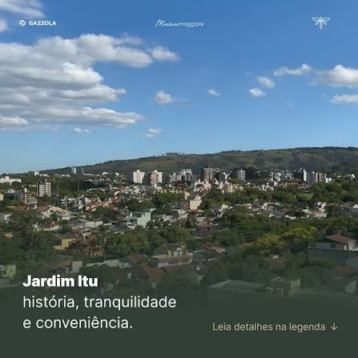
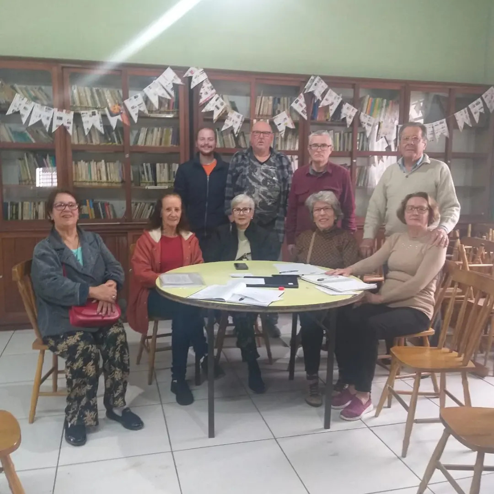
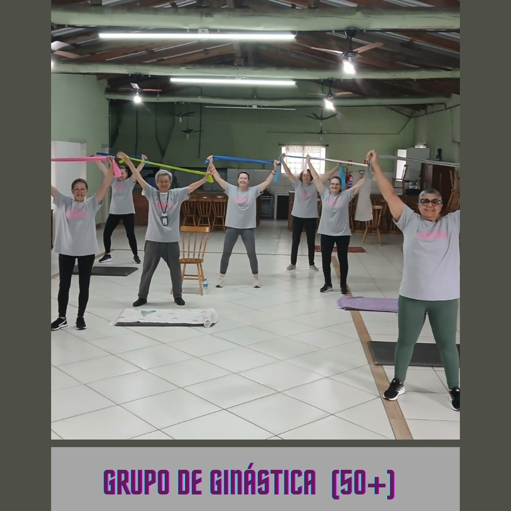
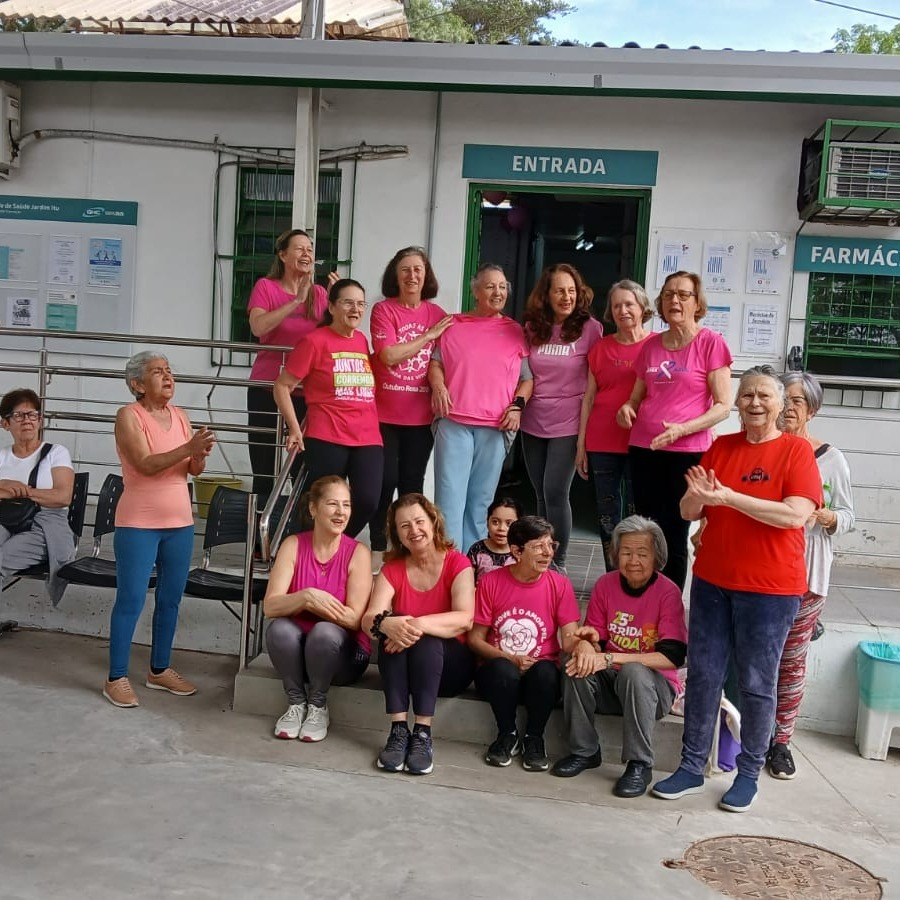
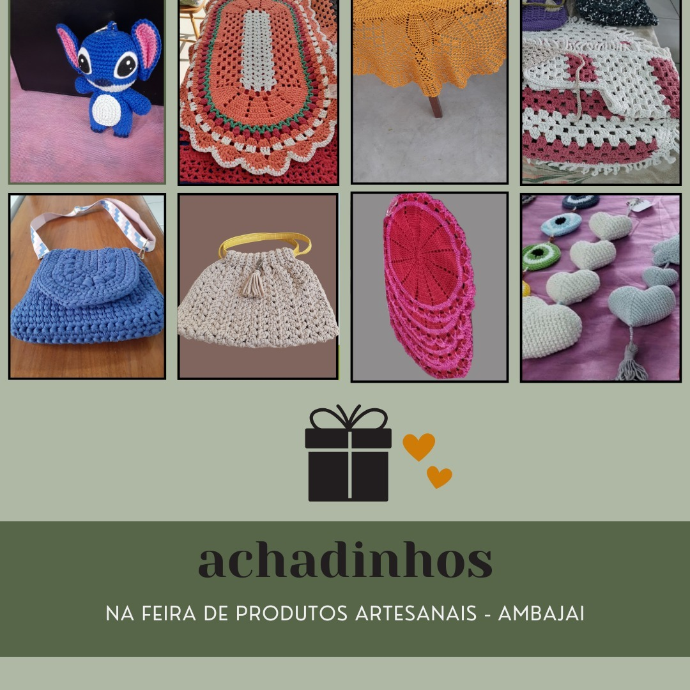
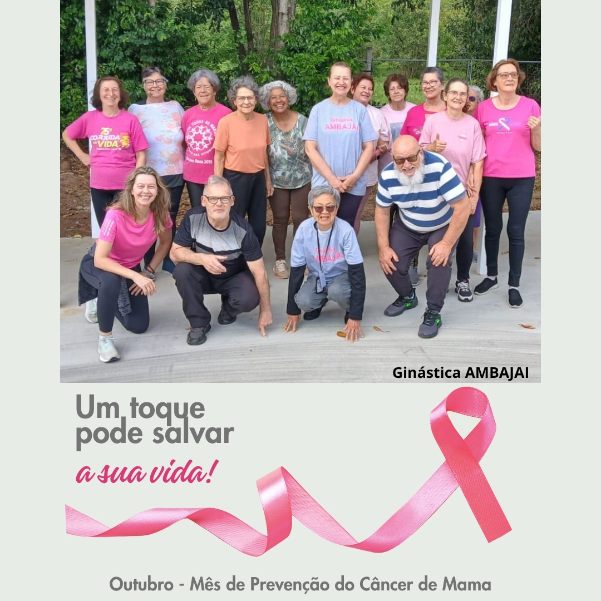
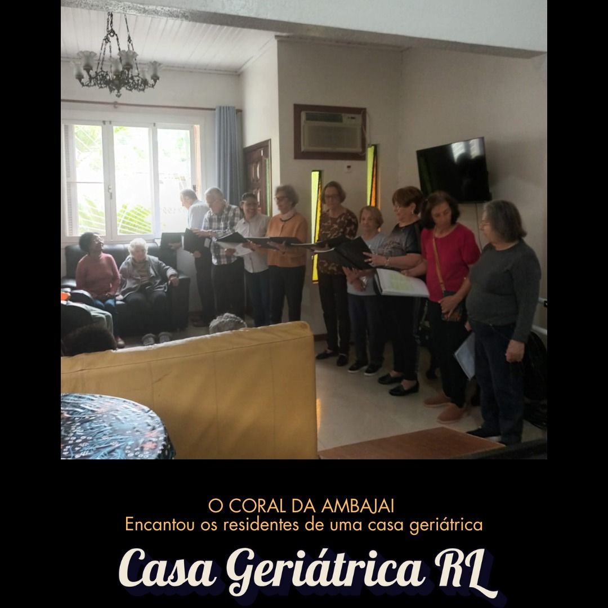
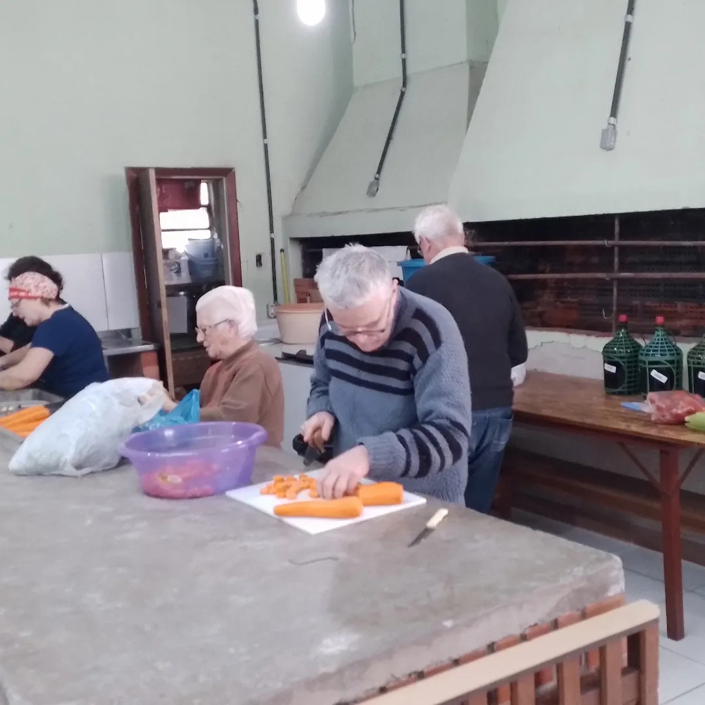
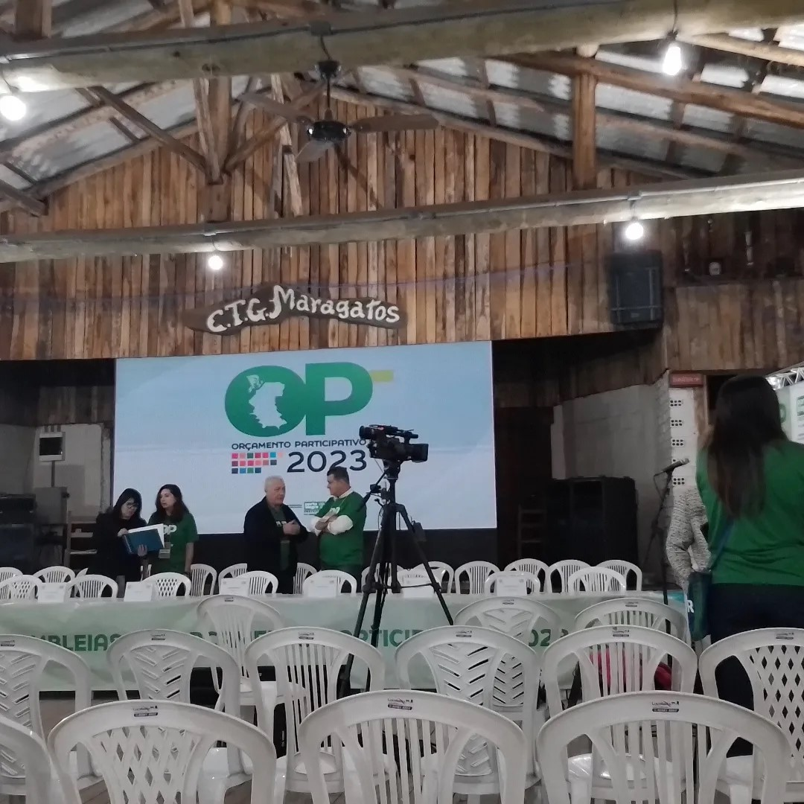

Coral AMBAJAI
Descubra seu potencial para cantar. Um espaço de convivência, música e amizade aberto a todos os moradores.
Sextas · 14h às 16h
Associação dos Moradores do Bairro Jardim Itu
Há décadas construindo juntos o bairro que queremos viver.
União, cultura, saúde e participação comunitária; do aperto de mãos que nos define à voz de cada morador.

Nossa missão
“Promover a convivência e, juntos, construirmos o bairro que queremos para viver.”
— AMBAJAI, Associação dos Moradores do Bairro Jardim Itu
Quem somos - Nossos valores
A AMBAJAI nasceu, em 22 de Julho de 1972, do aperto de mãos que se tornou nosso símbolo: a união entre moradores do Jardim Itu em torno de um bairro mais acolhedor, saudável e vivo.
Há mais de cinco décadas, promovemos cultura, saúde, convivência e participação comunitária. Do coral às feiras de artesanato, do brechó solidário às reuniões com a comunidade, cada atividade é uma forma de cuidar do lugar que chamamos de lar.
Aqui, tradição e renovação caminham juntas. Este site é parte dessa renovação: um espaço para conhecer, participar e fazer parte da próxima página da nossa história.
Do aperto de mãos do nosso logo à força de cada morador: juntos somos o bairro.
Sua voz importa. Reuniões abertas para construir coletivamente o futuro do Jardim Itu.
54 anos de história, coral, feiras e festas que celebram nossa identidade comunitária.
Cuidamos uns dos outros. Da saúde à economia solidária, das pessoas aos animais, somos todos o mesmo bairro.
SEMPRE COM RESPEITO E MUITA TRANSPARÊNCIA

Nosso propósito
Muito mais do que uma associação, somos um movimento de gente que se cuida e cuida do seu bairro, esse é o nosso propósito. Conheça as ações que movimentam o Jardim Itu durante todo o ano.
Descubra seu potencial para cantar. Um espaço de convivência, música e amizade aberto a todos os moradores.
Sextas · 14h às 16hCrochê, acessórios, decoração, suculentas, pães e doces. Arte da comunidade, feita por mãos do bairro.
Eventos sazonais · 9h às 17hRoupas, calçados, acessórios e utensílios. Economia solidária, sustentabilidade e garimpo que gera recursos.
Eventos sazonais · 9h às 17hDê sua opinião, traga sugestões, participe. Um bairro melhor se constrói com a voz de quem mora nele.
Aos sábados · 9h às 10hOutubro Rosa, combate à dengue e campanhas de bem-estar. Cuidar da comunidade é cuidar de cada um.
Campanhas ao longo do anoMovimento, convivência e saúde para a melhor idade. Rodas de conversa, música, poesia e dança.
Encontros regularesFeijoada, chá das mães, chá da primavera e almoços comemorativos. À mesa, a comunidade se encontra.
Datas comemorativasRoda de música, poesia e dança contando com a participação do CTG Tiaraju e grupos culturais do bairro.
Eventos especiaisTodas as atividades acontecem na Rua Biscaia, 39 — Jardim Itu.
Nossa visão do futuro
Queremos que a AMBAJAI seja lembrada e reconhecida como a voz e o ponto de encontro da comunidade, com participação de todas as gerações. Em breve, uma galeria totalmente remodelada.

Outubro Rosa: moradoras unidas pela saúde da mulher

Feira de Produtos Artesanais: arte da comunidade

Prevenção e informação que salvam vidas

Coral, cultura e participação: nosso bairro em movimento

54 anos de festas, feiras e celebrações
Feijoada, brechó e reuniões: a agenda do bairro

Siga @jardimituambajai e acompanhe o bairro
Agenda
A AMBAJAI se reúne o ano inteiro. Confira nossa agenda regular e fique de olho nos eventos especiais que anunciamos no Instagram.
A oportunidade mensal para você opinar, sugerir e decidir com a gente. “Vamos construir juntos o bairro que queremos viver.”
Quero participar →Sua voz importa. Opiniões, sugestões e decisões do bairro.
Aos sábados · 9h às 10hEnsaio aberto a todos os moradores que querem cantar.
Sextas-feiras · 14h às 16hCrochê, suculentas, pães, doces e arte da comunidade.
Datas especiais · 9h às 17hRoupas, calçados e acessórios em economia solidária.
Datas especiais · 9h às 17hFaça parte
A AMBAJAI é feita de moradores como você. Junte-se à nossa comunidade e ajude a construir o bairro que todos queremos viver.
Sua voz define o futuro do bairro. Vote, sugira e ajude a escolher caminhos.
Coral, feiras, brechó, eventos — uma rede de gente que cuida do lugar.
Solidariedade na prática: apoio mútuo, saúde e convivência entre vizinhos.
Fale com a gente
Tem dúvidas, sugestões ou quer participar? A AMBAJAI é de portas abertas — venha conversar.
Rua Biscaia, 39
Jardim Itu, Porto Alegre - RS, CEP 91380-030
ambajai.1972@gmail.com
(51) XXXXX-YYYY
(em breve)
@jardimituambajai